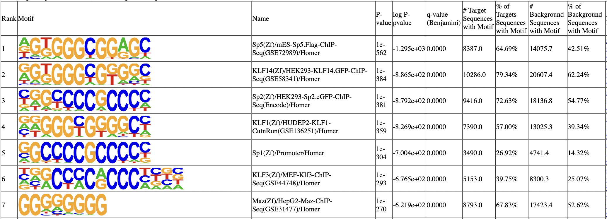

Tutorial: SP1 bindings in Cre-driver mouse lines.¶
In this tutorial, we will analyze the binding of the transcription factor Sp1, collected using cre-dependant calling cards from a Syn1::Cre-driver mouse line. Bulk unfused (Brd4 directed) data was also collected as backgound. This dataset contains two time points: day 10(P10) and day 28(P28). The dataset is from Cammack et al., PNAS. (2020), and it can be downloaded from GEO.
In this tutorial, we will call peaks, make annotation, and perfrom differential peak analysis. There are 271946 insertions in the SP1 P10 qbed file, 1083099 insertions in the SP1 P28 qbed file, and 5573110 insertions in the brd4 qbed file.
[1]:
import pycallingcards as cc
import numpy as np
import pandas as pd
import scanpy as sc
from matplotlib import pyplot as plt
plt.rcParams['figure.dpi'] = 150
We start by reading the qbed datafile. In this file, each row represents a Sp1-directed insertion and columns indicate the chromosome, start point and end point, read number, the direction and the sample barcode of each insertion. For example, the first row means one insertion is on Chromosome 1, and starts from 3095378 and ends on 3095382. The reads number is 7 with direction going from 3’ to 5’. The barcode of the cell is TAAGG. We give it the group column to distinguish between groups.
Use cc.rd.read_qbed(filename) to read your own qbed data.
[2]:
SP1_P10 = cc.datasets.SP1_Cre_data(data = "SP1_P10")
SP1_P10['group'] = 'P10'
SP1_P10
[2]:
| Chr | Start | End | Reads | Direction | Barcodes | group | |
|---|---|---|---|---|---|---|---|
| 0 | chr1 | 3095378 | 3095382 | 7 | + | TAAGG | P10 |
| 1 | chr1 | 3120128 | 3120132 | 1 | + | GTTAC | P10 |
| 2 | chr1 | 3121275 | 3121279 | 10 | - | GTTAC | P10 |
| 3 | chr1 | 3121275 | 3121279 | 2 | - | GTTAC | P10 |
| 4 | chr1 | 3222947 | 3222951 | 1 | - | GTTAC | P10 |
| ... | ... | ... | ... | ... | ... | ... | ... |
| 271941 | chrY | 1010004 | 1010008 | 1 | - | GTTAC | P10 |
| 271942 | chrY | 1011155 | 1011159 | 12 | - | GTTAC | P10 |
| 271943 | chrY | 1178766 | 1178770 | 10 | + | GTTAC | P10 |
| 271944 | chrY | 1244787 | 1244791 | 11 | + | GTTAC | P10 |
| 271945 | chrY | 5433055 | 5433059 | 2 | + | CGAAA | P10 |
271946 rows × 7 columns
[3]:
SP1_P28 = cc.datasets.SP1_Cre_data(data = "SP1_P28")
SP1_P28['group'] = 'P28'
SP1_P28
[3]:
| Chr | Start | End | Reads | Direction | Barcodes | group | |
|---|---|---|---|---|---|---|---|
| 0 | chr1 | 3071865 | 3071869 | 76 | + | GTCAT | P28 |
| 1 | chr1 | 3095378 | 3095382 | 7 | + | ACTGC | P28 |
| 2 | chr1 | 3102707 | 3102711 | 1 | - | GTCAT | P28 |
| 3 | chr1 | 3119905 | 3119909 | 4 | + | GTCAT | P28 |
| 4 | chr1 | 3120189 | 3120193 | 66 | - | GTCAT | P28 |
| ... | ... | ... | ... | ... | ... | ... | ... |
| 1083094 | chrY | 90803579 | 90803583 | 14 | - | GTCAT | P28 |
| 1083095 | chrY | 90805130 | 90805134 | 10 | + | ACTGC | P28 |
| 1083096 | chrY | 90805130 | 90805134 | 1 | + | CGAAA | P28 |
| 1083097 | chrY | 90806531 | 90806535 | 5 | - | GTCAT | P28 |
| 1083098 | chrY | 90811001 | 90811005 | 63 | + | ACTGC | P28 |
1083099 rows × 7 columns
To call differential peaks, we first combine the two qbed files together.
[4]:
SP1 = cc.rd.combine_qbed([SP1_P10, SP1_P28])
SP1
[4]:
| Chr | Start | End | Reads | Direction | Barcodes | group | |
|---|---|---|---|---|---|---|---|
| 0 | chr1 | 3071865 | 3071869 | 76 | + | GTCAT | P28 |
| 1 | chr1 | 3095378 | 3095382 | 7 | + | TAAGG | P10 |
| 2 | chr1 | 3095378 | 3095382 | 7 | + | ACTGC | P28 |
| 3 | chr1 | 3102707 | 3102711 | 1 | - | GTCAT | P28 |
| 4 | chr1 | 3119905 | 3119909 | 4 | + | GTCAT | P28 |
| ... | ... | ... | ... | ... | ... | ... | ... |
| 1355040 | chrY | 90803579 | 90803583 | 14 | - | GTCAT | P28 |
| 1355041 | chrY | 90805130 | 90805134 | 10 | + | ACTGC | P28 |
| 1355042 | chrY | 90805130 | 90805134 | 1 | + | CGAAA | P28 |
| 1355043 | chrY | 90806531 | 90806535 | 5 | - | GTCAT | P28 |
| 1355044 | chrY | 90811001 | 90811005 | 63 | + | ACTGC | P28 |
1355045 rows × 7 columns
The insertions might be mapped unlocalized or unplaced, we now clean it here.
[5]:
SP1 = cc.pp.clean_qbed(SP1)
SP1
[5]:
| Chr | Start | End | Reads | Direction | Barcodes | group | |
|---|---|---|---|---|---|---|---|
| 0 | chr1 | 3071865 | 3071869 | 76 | + | GTCAT | P28 |
| 1 | chr1 | 3095378 | 3095382 | 7 | + | TAAGG | P10 |
| 2 | chr1 | 3095378 | 3095382 | 7 | + | ACTGC | P28 |
| 3 | chr1 | 3102707 | 3102711 | 1 | - | GTCAT | P28 |
| 4 | chr1 | 3119905 | 3119909 | 4 | + | GTCAT | P28 |
| ... | ... | ... | ... | ... | ... | ... | ... |
| 1355040 | chrY | 90803579 | 90803583 | 14 | - | GTCAT | P28 |
| 1355041 | chrY | 90805130 | 90805134 | 10 | + | ACTGC | P28 |
| 1355042 | chrY | 90805130 | 90805134 | 1 | + | CGAAA | P28 |
| 1355043 | chrY | 90806531 | 90806535 | 5 | - | GTCAT | P28 |
| 1355044 | chrY | 90811001 | 90811005 | 63 | + | ACTGC | P28 |
1354844 rows × 7 columns
We then read the brd4 background file.
[6]:
bg = cc.datasets.SP1_Cre_data(data = "background")
bg
[6]:
| Chr | Start | End | Reads | Direction | Barcodes | |
|---|---|---|---|---|---|---|
| 0 | chr1 | 3004272 | 3004276 | 5 | + | ACTGC |
| 1 | chr1 | 3028063 | 3028067 | 6 | - | ACTGC |
| 2 | chr1 | 3043241 | 3043245 | 1 | - | ACTGC |
| 3 | chr1 | 3049117 | 3049121 | 1 | - | CAGTG |
| 4 | chr1 | 3052152 | 3052156 | 1 | + | ACTGC |
| ... | ... | ... | ... | ... | ... | ... |
| 5573105 | chrY | 90811001 | 90811005 | 2 | + | CAGTG |
| 5573106 | chrY | 90811001 | 90811005 | 1 | + | CAGTG |
| 5573107 | chrY | 90811001 | 90811005 | 1 | + | CAGTG |
| 5573108 | chrY | 90811001 | 90811005 | 2 | + | TGACA |
| 5573109 | chrY | 90811001 | 90811005 | 13 | + | CAGTG |
5573110 rows × 6 columns
[7]:
bg = cc.pp.clean_qbed(bg)
bg
[7]:
| Chr | Start | End | Reads | Direction | Barcodes | |
|---|---|---|---|---|---|---|
| 0 | chr1 | 3004272 | 3004276 | 5 | + | ACTGC |
| 1 | chr1 | 3028063 | 3028067 | 6 | - | ACTGC |
| 2 | chr1 | 3043241 | 3043245 | 1 | - | ACTGC |
| 3 | chr1 | 3049117 | 3049121 | 1 | - | CAGTG |
| 4 | chr1 | 3052152 | 3052156 | 1 | + | ACTGC |
| ... | ... | ... | ... | ... | ... | ... |
| 5573105 | chrY | 90811001 | 90811005 | 2 | + | CAGTG |
| 5573106 | chrY | 90811001 | 90811005 | 1 | + | CAGTG |
| 5573107 | chrY | 90811001 | 90811005 | 1 | + | CAGTG |
| 5573108 | chrY | 90811001 | 90811005 | 2 | + | TGACA |
| 5573109 | chrY | 90811001 | 90811005 | 13 | + | CAGTG |
5572856 rows × 6 columns
We next need to call peaks to identify potential Sp1 binding sites. Three different methods (‘CCcaller’, ‘MACCs’, ‘Blockify’) are available along with three different species (‘hg38’, ‘mm10’, ‘sacCer3’).
Here, we use MACCs in mouse(‘mm10’) data. window_size is the most important parameter for MACCs, and it is highly related to the length of a peak. 1000-1200 is a good fit for window_size. step_size is another important parameter and it controls how careful we are looking into the chromosomes. 500-800 is good for step_size. pvalue_cutoffTTAA is the pvalue cutoff for TTAA data and pvalue_cutoffbg is pvalue cutoff for the background qbed data. Normally, the setting for pvalue_cutoffbg is considerably higher than pvalue_cutoffTTAA. pvalue_cutoffbg is recommended from 0.00001 to 0.01 and pvalue_cutoffTTAA is recommended from 0.001 to 0.1. The setting of pseudocounts is largely influenced by library size. For the first time of trial, it can be adjusted to \(10^{6}-10^{-5} \times\) the number of insertions.
[8]:
peak_data = cc.pp.call_peaks(SP1, bg, method = "MACCs", reference = "mm10", pvalue_cutoffbg = 0.001,
window_size = 1000, step_size = 500, pvalue_cutoffTTAA = 0.00001,
lam_win_size = 1000000, pseudocounts = 0.1, record = True, save = "peak.bed")
peak_data
For the MACCs method with background, [expdata, background, reference, pvalue_cutoffbg, pvalue_cutoffTTAA, lam_win_size, window_size, step_size, extend, pseudocounts, test_method, min_insertions, record] would be utilized.
100%|██████████| 21/21 [04:43<00:00, 13.50s/it]
[8]:
| Chr | Start | End | Center | Experiment Insertions | Background insertions | Reference Insertions | pvalue Reference | pvalue Background | Fraction Experiment | TPH Experiment | Fraction background | TPH background | TPH background subtracted | pvalue_adj Reference | |
|---|---|---|---|---|---|---|---|---|---|---|---|---|---|---|---|
| 0 | chr1 | 3399656 | 3400345 | 3400068.0 | 21 | 69 | 8 | 0.000000e+00 | 1.745466e-04 | 0.000015 | 1549.993948 | 1.238144e-05 | 1238.144320 | 311.849628 | 0.000000e+00 |
| 1 | chr1 | 3672013 | 3673193 | 3672213.0 | 61 | 47 | 9 | 0.000000e+00 | 0.000000e+00 | 0.000045 | 4502.363372 | 8.433737e-06 | 843.373667 | 3658.989705 | 0.000000e+00 |
| 2 | chr1 | 4773450 | 4774236 | 4773657.0 | 6 | 5 | 4 | 2.405425e-08 | 1.939280e-04 | 0.000004 | 442.855414 | 8.972060e-07 | 89.720603 | 353.134811 | 6.323087e-06 |
| 3 | chr1 | 4785206 | 4786550 | 4785472.0 | 31 | 47 | 13 | 0.000000e+00 | 2.298502e-08 | 0.000023 | 2288.086304 | 8.433737e-06 | 843.373667 | 1444.712637 | 0.000000e+00 |
| 4 | chr1 | 5016489 | 5017564 | 5017023.0 | 8 | 10 | 8 | 1.672281e-09 | 3.938477e-04 | 0.000006 | 590.473885 | 1.794412e-06 | 179.441206 | 411.032679 | 4.739980e-07 |
| ... | ... | ... | ... | ... | ... | ... | ... | ... | ... | ... | ... | ... | ... | ... | ... |
| 10739 | chrX | 169325223 | 169325838 | 169325423.0 | 11 | 16 | 9 | 5.107026e-15 | 1.876575e-04 | 0.000008 | 811.901592 | 2.871059e-06 | 287.105929 | 524.795662 | 1.893816e-12 |
| 10740 | chrX | 169799382 | 169801491 | 169799905.0 | 25 | 29 | 23 | 0.000000e+00 | 3.271381e-07 | 0.000018 | 1845.230890 | 5.203795e-06 | 520.379497 | 1324.851393 | 0.000000e+00 |
| 10741 | chrX | 169829316 | 169830343 | 169829658.0 | 9 | 9 | 10 | 2.746225e-09 | 1.659074e-04 | 0.000007 | 664.283120 | 1.614971e-06 | 161.497085 | 502.786035 | 7.671705e-07 |
| 10742 | chrX | 169878786 | 169879561 | 169879328.0 | 19 | 21 | 10 | 0.000000e+00 | 1.379092e-06 | 0.000014 | 1402.375476 | 3.768265e-06 | 376.826532 | 1025.548944 | 0.000000e+00 |
| 10743 | chrY | 1009804 | 1011442 | 1010850.0 | 17 | 2 | 16 | 0.000000e+00 | 7.771561e-16 | 0.000013 | 1254.757005 | 3.588824e-07 | 35.888241 | 1218.868764 | 0.000000e+00 |
10744 rows × 15 columns
Approach the above by first combining the data and then call peaks together.
Although not recommended, you could also try calling peaks seperately and then merging the peaks by pybedtools. Below is the code:
import pybedtools
peak_data1 = cc.pp.call_peaks(SP1_P10, bg, method = "MACCs", reference = "mm10",
pvalue_cutoffbg = 0.1, window_size=1500, step_size=500,
lam_win_size = None, pseudocounts = 0.1, record = True)
peak_data2 = cc.pp.call_peaks(SP1_P28, bg, method = "MACCs", reference = "mm10",
pvalue_cutoffbg = 0.1, window_size=1500, step_size=500,
lam_win_size = None, pseudocounts = 0.1, record = True)
peak = cc.rd.combine_qbed([peak_data1, peak_data2])
peak = pybedtools.BedTool.from_dataframe(peak).merge().to_dataframe()
peak_data = peak.rename(columns={"chrom":"Chr", "start":"Start", "end":"End"})
In order to choose the suitable method and parameters for peak calling, please take a look at genome areas. We stongly advise to adjust the parameters for cc.pp.call_peaks() to call better peaks.
In this plot, the colored ones are the experiment qbed data and the gray ones are the background data. The top section shows insertions and their read counts. One dot is an insertion and the height is log(reads+1). The middle section indicates the distribution of insertions. The bottom section represents reference genes and peaks.
[9]:
cc.pl.draw_area("chr1", 4856929, 4863861, 100000, peak_data, SP1, "mm10", bg, font_size=2, plotsize = [1,1,6],
figsize = (30,12), peak_line = 2, save = False, bins = 500, example_length = 5000)
[10]:
cc.pl.draw_area("chr2", 3116481, 3125943, 15000, peak_data, SP1, "mm10", bg, font_size=2, plotsize = [1,1,3],
figsize = (30,10), peak_line = 3, save = False, bins = 500, example_length = 1000)
We can also visualize our data directly in the WashU Epigenome Browser. This can be useful for overlaying your data with other published datasets. Please note that this link only valid for 24hrs, so you will have to rerun it if you want to use it after this time period.
[11]:
qbed= {"SP1":SP1, "bg":bg}
bed = {'PEAK':peak_data}
cc.pl.WashU_browser_url(qbed, bed, genome = 'mm10')
All qbed addressed
All bed addressed
Uploading files
Please click the following link to see the data on WashU Epigenome Browser directly.
https://epigenomegateway.wustl.edu/browser/?genome=mm10&hub=https://companion.epigenomegateway.org//task/a4f06270936d67281d4c9aa3065922e2/output//datahub.json
Pycallingcards can be used to visual peak locations acorss the genome to see that the distribution of peaks is unbiased and that all chromosomes are represented.
[12]:
cc.pl.whole_peaks(peak_data, linewidth = 1, reference = "mm10")

We can next use HOMER to look for motifs that are overrepresented under the peaks. Here, we expect to find the SP1 motif.
[13]:
cc.tl.call_motif(peaks_frame = peak_data, reference = "mm10", save_homer = "Homer/peak",
homer_path = "/home/juanru/miniconda3/bin/", num_cores=12)
There is no save_name, it will save to temp_Homer_trial.bed and then delete.
Position file = temp_Homer_trial.bed
Genome = mm10
Output Directory = Homer/peak
Fragment size set to 1000
Using 12 CPUs
Will not run homer for de novo motifs
Found mset for "mouse", will check against vertebrates motifs
Peak/BED file conversion summary:
BED/Header formatted lines: 10744
peakfile formatted lines: 0
Peak File Statistics:
Total Peaks: 10744
Redundant Peak IDs: 0
Peaks lacking information: 0 (need at least 5 columns per peak)
Peaks with misformatted coordinates: 0 (should be integer)
Peaks with misformatted strand: 0 (should be either +/- or 0/1)
Peak file looks good!
Background files for 1000 bp fragments found.
Custom genome sequence directory: /home/juanru/miniconda3/share/homer/.//data/genomes/mm10//
Extracting sequences from directory: /home/juanru/miniconda3/share/homer/.//data/genomes/mm10//
Extracting 680 sequences from chr1
Extracting 873 sequences from chr2
Extracting 561 sequences from chr3
Extracting 698 sequences from chr4
Extracting 682 sequences from chr5
Extracting 540 sequences from chr6
Extracting 670 sequences from chr7
Extracting 535 sequences from chr8
Extracting 609 sequences from chr9
Extracting 557 sequences from chr10
Extracting 768 sequences from chr11
Extracting 469 sequences from chr12
Extracting 427 sequences from chr13
Extracting 413 sequences from chr14
Extracting 422 sequences from chr15
Extracting 396 sequences from chr16
Extracting 453 sequences from chr17
Extracting 366 sequences from chr18
Extracting 325 sequences from chr19
Extracting 299 sequences from chrX
Extracting 1 sequences from chrY
1 of 10744 removed because they had >70.00% Ns (i.e. masked repeats)
Not removing redundant sequences
Sequences processed:
Auto detected maximum sequence length of 1001 bp
10743 total
Frequency Bins: 0.2 0.25 0.3 0.35 0.4 0.45 0.5 0.6 0.7 0.8
Freq Bin Count
0.3 2 6
0.35 3 180
0.4 4 932
0.45 5 2120
0.5 6 2862
0.6 7 3871
0.7 8 717
0.8 9 55
Total sequences set to 50000
Choosing background that matches in CpG/GC content...
Bin # Targets # Background Background Weight
2 6 22 0.997
3 180 658 1.000
4 932 3406 1.000
5 2120 7747 1.000
6 2862 10458 1.000
7 3871 14145 1.000
8 717 2620 1.000
9 55 201 1.000
Assembling sequence file...
Normalizing lower order oligos using homer2
Reading input files...
50000 total sequences read
Autonormalization: 1-mers (4 total)
A 25.47% 25.72% 0.990
C 24.53% 24.28% 1.010
G 24.53% 24.28% 1.010
T 25.47% 25.72% 0.990
Autonormalization: 2-mers (16 total)
AA 7.69% 7.08% 1.087
CA 6.98% 7.64% 0.914
GA 6.16% 6.34% 0.972
TA 4.64% 4.66% 0.996
AC 5.10% 5.36% 0.951
CC 7.22% 7.02% 1.029
GC 6.05% 5.57% 1.087
TC 6.16% 6.34% 0.972
AG 7.55% 7.89% 0.957
CG 2.78% 1.74% 1.598
GG 7.22% 7.02% 1.029
TG 6.98% 7.64% 0.914
AT 5.13% 5.38% 0.953
CT 7.55% 7.89% 0.957
GT 5.10% 5.36% 0.951
TT 7.69% 7.08% 1.087
Autonormalization: 3-mers (64 total)
Normalization weights can be found in file: Homer/peak/seq.autonorm.tsv
Converging on autonormalization solution:
...............................................................................
Final normalization: Autonormalization: 1-mers (4 total)
A 25.47% 25.41% 1.002
C 24.53% 24.59% 0.998
G 24.53% 24.59% 0.998
T 25.47% 25.41% 1.002
Autonormalization: 2-mers (16 total)
AA 7.69% 7.40% 1.040
CA 6.98% 7.14% 0.977
GA 6.16% 6.21% 0.992
TA 4.64% 4.67% 0.995
AC 5.10% 5.16% 0.989
CC 7.22% 7.21% 1.001
GC 6.05% 6.01% 1.007
TC 6.16% 6.21% 0.992
AG 7.55% 7.58% 0.996
CG 2.78% 2.65% 1.049
GG 7.22% 7.21% 1.001
TG 6.98% 7.14% 0.977
AT 5.13% 5.28% 0.972
CT 7.55% 7.58% 0.996
GT 5.10% 5.16% 0.989
TT 7.69% 7.40% 1.040
Autonormalization: 3-mers (64 total)
Finished preparing sequence/group files
----------------------------------------------------------
Known motif enrichment
Reading input files...
50000 total sequences read
440 motifs loaded
Cache length = 11180
Using binomial scoring
Checking enrichment of 440 motif(s)
|0% 50% 100%|
=================================================================================
Finished!
Preparing HTML output with sequence logos...
1 of 440 (1e-529) Sp5(Zf)/mES-Sp5.Flag-ChIP-Seq(GSE72989)/Homer
2 of 440 (1e-371) Sp2(Zf)/HEK293-Sp2.eGFP-ChIP-Seq(Encode)/Homer
3 of 440 (1e-365) KLF14(Zf)/HEK293-KLF14.GFP-ChIP-Seq(GSE58341)/Homer
4 of 440 (1e-354) KLF1(Zf)/HUDEP2-KLF1-CutnRun(GSE136251)/Homer
5 of 440 (1e-294) Sp1(Zf)/Promoter/Homer
6 of 440 (1e-258) KLF3(Zf)/MEF-Klf3-ChIP-Seq(GSE44748)/Homer
7 of 440 (1e-251) Maz(Zf)/HepG2-Maz-ChIP-Seq(GSE31477)/Homer
8 of 440 (1e-229) KLF5(Zf)/LoVo-KLF5-ChIP-Seq(GSE49402)/Homer
9 of 440 (1e-221) KLF6(Zf)/PDAC-KLF6-ChIP-Seq(GSE64557)/Homer
10 of 440 (1e-154) Klf9(Zf)/GBM-Klf9-ChIP-Seq(GSE62211)/Homer
11 of 440 (1e-110) Klf4(Zf)/mES-Klf4-ChIP-Seq(GSE11431)/Homer
12 of 440 (1e-94) TATA-Box(TBP)/Promoter/Homer
13 of 440 (1e-74) KLF10(Zf)/HEK293-KLF10.GFP-ChIP-Seq(GSE58341)/Homer
14 of 440 (1e-63) Egr1(Zf)/K562-Egr1-ChIP-Seq(GSE32465)/Homer
15 of 440 (1e-58) E2F3(E2F)/MEF-E2F3-ChIP-Seq(GSE71376)/Homer
16 of 440 (1e-53) Zfp281(Zf)/ES-Zfp281-ChIP-Seq(GSE81042)/Homer
17 of 440 (1e-52) WT1(Zf)/Kidney-WT1-ChIP-Seq(GSE90016)/Homer
18 of 440 (1e-50) Lhx3(Homeobox)/Neuron-Lhx3-ChIP-Seq(GSE31456)/Homer
19 of 440 (1e-47) Nkx6.1(Homeobox)/Islet-Nkx6.1-ChIP-Seq(GSE40975)/Homer
20 of 440 (1e-47) ZNF467(Zf)/HEK293-ZNF467.GFP-ChIP-Seq(GSE58341)/Homer
21 of 440 (1e-45) RFX(HTH)/K562-RFX3-ChIP-Seq(SRA012198)/Homer
22 of 440 (1e-43) Znf263(Zf)/K562-Znf263-ChIP-Seq(GSE31477)/Homer
23 of 440 (1e-42) Hoxa13(Homeobox)/ChickenMSG-Hoxa13.Flag-ChIP-Seq(GSE86088)/Homer
24 of 440 (1e-40) Lhx1(Homeobox)/EmbryoCarcinoma-Lhx1-ChIP-Seq(GSE70957)/Homer
25 of 440 (1e-39) Mef2c(MADS)/GM12878-Mef2c-ChIP-Seq(GSE32465)/Homer
26 of 440 (1e-38) CHR(?)/Hela-CellCycle-Expression/Homer
27 of 440 (1e-37) Rfx2(HTH)/LoVo-RFX2-ChIP-Seq(GSE49402)/Homer
28 of 440 (1e-37) Isl1(Homeobox)/Neuron-Isl1-ChIP-Seq(GSE31456)/Homer
29 of 440 (1e-37) Dlx3(Homeobox)/Kerainocytes-Dlx3-ChIP-Seq(GSE89884)/Homer
30 of 440 (1e-36) En1(Homeobox)/SUM149-EN1-ChIP-Seq(GSE120957)/Homer
31 of 440 (1e-36) X-box(HTH)/NPC-H3K4me1-ChIP-Seq(GSE16256)/Homer
32 of 440 (1e-35) Mef2d(MADS)/Retina-Mef2d-ChIP-Seq(GSE61391)/Homer
33 of 440 (1e-33) E2F6(E2F)/Hela-E2F6-ChIP-Seq(GSE31477)/Homer
34 of 440 (1e-33) DLX5(Homeobox)/BasalGanglia-Dlx5-ChIP-seq(GSE124936)/Homer
35 of 440 (1e-32) LHX9(Homeobox)/Hct116-LHX9.V5-ChIP-Seq(GSE116822)/Homer
36 of 440 (1e-31) E2F4(E2F)/K562-E2F4-ChIP-Seq(GSE31477)/Homer
37 of 440 (1e-31) EKLF(Zf)/Erythrocyte-Klf1-ChIP-Seq(GSE20478)/Homer
38 of 440 (1e-31) BMYB(HTH)/Hela-BMYB-ChIP-Seq(GSE27030)/Homer
39 of 440 (1e-30) DLX2(Homeobox)/BasalGanglia-Dlx2-ChIP-seq(GSE124936)/Homer
40 of 440 (1e-30) Lhx2(Homeobox)/HFSC-Lhx2-ChIP-Seq(GSE48068)/Homer
41 of 440 (1e-29) Pitx1(Homeobox)/Chicken-Pitx1-ChIP-Seq(GSE38910)/Homer
42 of 440 (1e-28) Mef2b(MADS)/HEK293-Mef2b.V5-ChIP-Seq(GSE67450)/Homer
43 of 440 (1e-28) Elk4(ETS)/Hela-Elk4-ChIP-Seq(GSE31477)/Homer
44 of 440 (1e-27) DLX1(Homeobox)/BasalGanglia-Dlx1-ChIP-seq(GSE124936)/Homer
45 of 440 (1e-25) Hoxa11(Homeobox)/ChickenMSG-Hoxa11.Flag-ChIP-Seq(GSE86088)/Homer
46 of 440 (1e-25) Hoxd13(Homeobox)/ChickenMSG-Hoxd13.Flag-ChIP-Seq(GSE86088)/Homer
47 of 440 (1e-23) Hoxd11(Homeobox)/ChickenMSG-Hoxd11.Flag-ChIP-Seq(GSE86088)/Homer
48 of 440 (1e-23) Unknown(Homeobox)/Limb-p300-ChIP-Seq/Homer
49 of 440 (1e-22) MYB(HTH)/ERMYB-Myb-ChIPSeq(GSE22095)/Homer
50 of 440 (1e-21) Rfx1(HTH)/NPC-H3K4me1-ChIP-Seq(GSE16256)/Homer
51 of 440 (1e-19) Nanog(Homeobox)/mES-Nanog-ChIP-Seq(GSE11724)/Homer
52 of 440 (1e-18) Mef2a(MADS)/HL1-Mef2a.biotin-ChIP-Seq(GSE21529)/Homer
53 of 440 (1e-18) Arnt:Ahr(bHLH)/MCF7-Arnt-ChIP-Seq(Lo_et_al.)/Homer
54 of 440 (1e-18) HIF-1b(HLH)/T47D-HIF1b-ChIP-Seq(GSE59937)/Homer
55 of 440 (1e-17) Gfi1b(Zf)/HPC7-Gfi1b-ChIP-Seq(GSE22178)/Homer
56 of 440 (1e-17) Egr2(Zf)/Thymocytes-Egr2-ChIP-Seq(GSE34254)/Homer
57 of 440 (1e-17) Npas4(bHLH)/Neuron-Npas4-ChIP-Seq(GSE127793)/Homer
58 of 440 (1e-16) CTCF(Zf)/CD4+-CTCF-ChIP-Seq(Barski_et_al.)/Homer
59 of 440 (1e-14) CEBP(bZIP)/ThioMac-CEBPb-ChIP-Seq(GSE21512)/Homer
60 of 440 (1e-14) Tbr1(T-box)/Cortex-Tbr1-ChIP-Seq(GSE71384)/Homer
61 of 440 (1e-13) Elk1(ETS)/Hela-Elk1-ChIP-Seq(GSE31477)/Homer
62 of 440 (1e-13) Fli1(ETS)/CD8-FLI-ChIP-Seq(GSE20898)/Homer
63 of 440 (1e-12) AMYB(HTH)/Testes-AMYB-ChIP-Seq(GSE44588)/Homer
64 of 440 (1e-12) Tcf12(bHLH)/GM12878-Tcf12-ChIP-Seq(GSE32465)/Homer
65 of 440 (1e-11) JunD(bZIP)/K562-JunD-ChIP-Seq/Homer
66 of 440 (1e-11) Oct11(POU,Homeobox)/NCIH1048-POU2F3-ChIP-seq(GSE115123)/Homer
67 of 440 (1e-11) ETV4(ETS)/HepG2-ETV4-ChIP-Seq(ENCODE)/Homer
68 of 440 (1e-11) STAT6(Stat)/Macrophage-Stat6-ChIP-Seq(GSE38377)/Homer
69 of 440 (1e-10) CRX(Homeobox)/Retina-Crx-ChIP-Seq(GSE20012)/Homer
70 of 440 (1e-10) Ronin(THAP)/ES-Thap11-ChIP-Seq(GSE51522)/Homer
71 of 440 (1e-9) Rbpj1(?)/Panc1-Rbpj1-ChIP-Seq(GSE47459)/Homer
72 of 440 (1e-9) MYNN(Zf)/HEK293-MYNN.eGFP-ChIP-Seq(Encode)/Homer
73 of 440 (1e-9) Hnf1(Homeobox)/Liver-Foxa2-Chip-Seq(GSE25694)/Homer
74 of 440 (1e-9) Myf5(bHLH)/GM-Myf5-ChIP-Seq(GSE24852)/Homer
75 of 440 (1e-8) Hoxa9(Homeobox)/ChickenMSG-Hoxa9.Flag-ChIP-Seq(GSE86088)/Homer
76 of 440 (1e-8) HIF2a(bHLH)/785_O-HIF2a-ChIP-Seq(GSE34871)/Homer
77 of 440 (1e-8) ELF1(ETS)/Jurkat-ELF1-ChIP-Seq(SRA014231)/Homer
78 of 440 (1e-8) NFY(CCAAT)/Promoter/Homer
79 of 440 (1e-8) Hoxc9(Homeobox)/Ainv15-Hoxc9-ChIP-Seq(GSE21812)/Homer
80 of 440 (1e-8) Zfp57(Zf)/H1-ZFP57.HA-ChIP-Seq(GSE115387)/Homer
81 of 440 (1e-8) NF1-halfsite(CTF)/LNCaP-NF1-ChIP-Seq(Unpublished)/Homer
82 of 440 (1e-7) Nkx2.2(Homeobox)/NPC-Nkx2.2-ChIP-Seq(GSE61673)/Homer
83 of 440 (1e-7) GFY(?)/Promoter/Homer
84 of 440 (1e-7) MyoD(bHLH)/Myotube-MyoD-ChIP-Seq(GSE21614)/Homer
85 of 440 (1e-7) Stat3+il21(Stat)/CD4-Stat3-ChIP-Seq(GSE19198)/Homer
86 of 440 (1e-7) STAT6(Stat)/CD4-Stat6-ChIP-Seq(GSE22104)/Homer
87 of 440 (1e-7) FoxD3(forkhead)/ZebrafishEmbryo-Foxd3.biotin-ChIP-seq(GSE106676)/Homer
88 of 440 (1e-6) Rfx6(HTH)/Min6b1-Rfx6.HA-ChIP-Seq(GSE62844)/Homer
89 of 440 (1e-6) E2F1(E2F)/Hela-E2F1-ChIP-Seq(GSE22478)/Homer
90 of 440 (1e-6) Prop1(Homeobox)/GHFT1-PROP1.biotin-ChIP-Seq(GSE77302)/Homer
91 of 440 (1e-6) STAT4(Stat)/CD4-Stat4-ChIP-Seq(GSE22104)/Homer
92 of 440 (1e-6) Tcf21(bHLH)/ArterySmoothMuscle-Tcf21-ChIP-Seq(GSE61369)/Homer
93 of 440 (1e-6) GLIS3(Zf)/Thyroid-Glis3.GFP-ChIP-Seq(GSE103297)/Homer
94 of 440 (1e-6) Eomes(T-box)/H9-Eomes-ChIP-Seq(GSE26097)/Homer
95 of 440 (1e-6) Stat3(Stat)/mES-Stat3-ChIP-Seq(GSE11431)/Homer
96 of 440 (1e-6) NRF1(NRF)/MCF7-NRF1-ChIP-Seq(Unpublished)/Homer
97 of 440 (1e-6) ZNF652/HepG2-ZNF652.Flag-ChIP-Seq(Encode)/Homer
98 of 440 (1e-5) Rfx5(HTH)/GM12878-Rfx5-ChIP-Seq(GSE31477)/Homer
99 of 440 (1e-5) RORg(NR)/Liver-Rorc-ChIP-Seq(GSE101115)/Homer
100 of 440 (1e-5) NFAT(RHD)/Jurkat-NFATC1-ChIP-Seq(Jolma_et_al.)/Homer
101 of 440 (1e-5) Ap4(bHLH)/AML-Tfap4-ChIP-Seq(GSE45738)/Homer
102 of 440 (1e-5) Fox:Ebox(Forkhead,bHLH)/Panc1-Foxa2-ChIP-Seq(GSE47459)/Homer
103 of 440 (1e-5) Pitx1:Ebox(Homeobox,bHLH)/Hindlimb-Pitx1-ChIP-Seq(GSE41591)/Homer
104 of 440 (1e-5) MyoG(bHLH)/C2C12-MyoG-ChIP-Seq(GSE36024)/Homer
105 of 440 (1e-5) ETV1(ETS)/GIST48-ETV1-ChIP-Seq(GSE22441)/Homer
106 of 440 (1e-5) NFIL3(bZIP)/HepG2-NFIL3-ChIP-Seq(Encode)/Homer
107 of 440 (1e-5) NRF(NRF)/Promoter/Homer
108 of 440 (1e-5) Fos(bZIP)/TSC-Fos-ChIP-Seq(GSE110950)/Homer
109 of 440 (1e-4) TEAD1(TEAD)/HepG2-TEAD1-ChIP-Seq(Encode)/Homer
110 of 440 (1e-4) HLF(bZIP)/HSC-HLF.Flag-ChIP-Seq(GSE69817)/Homer
111 of 440 (1e-4) Tbx5(T-box)/HL1-Tbx5.biotin-ChIP-Seq(GSE21529)/Homer
112 of 440 (1e-4) NFkB-p65(RHD)/GM12787-p65-ChIP-Seq(GSE19485)/Homer
113 of 440 (1e-4) HNF1b(Homeobox)/PDAC-HNF1B-ChIP-Seq(GSE64557)/Homer
114 of 440 (1e-4) BORIS(Zf)/K562-CTCFL-ChIP-Seq(GSE32465)/Homer
115 of 440 (1e-4) E2F7(E2F)/Hela-E2F7-ChIP-Seq(GSE32673)/Homer
116 of 440 (1e-4) CRE(bZIP)/Promoter/Homer
117 of 440 (1e-4) GABPA(ETS)/Jurkat-GABPa-ChIP-Seq(GSE17954)/Homer
118 of 440 (1e-4) ERG(ETS)/VCaP-ERG-ChIP-Seq(GSE14097)/Homer
119 of 440 (1e-4) Smad3(MAD)/NPC-Smad3-ChIP-Seq(GSE36673)/Homer
120 of 440 (1e-4) HIC1(Zf)/Treg-ZBTB29-ChIP-Seq(GSE99889)/Homer
121 of 440 (1e-4) HOXB13(Homeobox)/ProstateTumor-HOXB13-ChIP-Seq(GSE56288)/Homer
122 of 440 (1e-4) Hoxd12(Homeobox)/ChickenMSG-Hoxd12.Flag-ChIP-Seq(GSE86088)/Homer
123 of 440 (1e-4) c-Myc(bHLH)/LNCAP-cMyc-ChIP-Seq(Unpublished)/Homer
124 of 440 (1e-4) CArG(MADS)/PUER-Srf-ChIP-Seq(Sullivan_et_al.)/Homer
125 of 440 (1e-4) TEAD3(TEA)/HepG2-TEAD3-ChIP-Seq(Encode)/Homer
126 of 440 (1e-4) Oct4:Sox17(POU,Homeobox,HMG)/F9-Sox17-ChIP-Seq(GSE44553)/Homer
127 of 440 (1e-4) OCT:OCT(POU,Homeobox)/NPC-Brn1-ChIP-Seq(GSE35496)/Homer
128 of 440 (1e-4) Foxo3(Forkhead)/U2OS-Foxo3-ChIP-Seq(E-MTAB-2701)/Homer
129 of 440 (1e-4) STAT5(Stat)/mCD4+-Stat5-ChIP-Seq(GSE12346)/Homer
130 of 440 (1e-4) FOXA1(Forkhead)/LNCAP-FOXA1-ChIP-Seq(GSE27824)/Homer
131 of 440 (1e-4) HIF-1a(bHLH)/MCF7-HIF1a-ChIP-Seq(GSE28352)/Homer
132 of 440 (1e-3) PBX2(Homeobox)/K562-PBX2-ChIP-Seq(Encode)/Homer
133 of 440 (1e-3) Phox2a(Homeobox)/Neuron-Phox2a-ChIP-Seq(GSE31456)/Homer
134 of 440 (1e-3) ZSCAN22(Zf)/HEK293-ZSCAN22.GFP-ChIP-Seq(GSE58341)/Homer
135 of 440 (1e-3) Atoh1(bHLH)/Cerebellum-Atoh1-ChIP-Seq(GSE22111)/Homer
136 of 440 (1e-3) RORa(NR)/Liver-Rora-ChIP-Seq(GSE101115)/Homer
137 of 440 (1e-3) OCT:OCT(POU,Homeobox,IR1)/NPC-Brn2-ChIP-Seq(GSE35496)/Homer
138 of 440 (1e-3) PRDM15(Zf)/ESC-Prdm15-ChIP-Seq(GSE73694)/Homer
139 of 440 (1e-3) Fra2(bZIP)/Striatum-Fra2-ChIP-Seq(GSE43429)/Homer
140 of 440 (1e-3) PU.1-IRF(ETS:IRF)/Bcell-PU.1-ChIP-Seq(GSE21512)/Homer
141 of 440 (1e-3) Atf2(bZIP)/3T3L1-Atf2-ChIP-Seq(GSE56872)/Homer
142 of 440 (1e-3) c-Jun-CRE(bZIP)/K562-cJun-ChIP-Seq(GSE31477)/Homer
143 of 440 (1e-3) OCT:OCT-short(POU,Homeobox)/NPC-OCT6-ChIP-Seq(GSE43916)/Homer
144 of 440 (1e-3) CEBP:AP1(bZIP)/ThioMac-CEBPb-ChIP-Seq(GSE21512)/Homer
145 of 440 (1e-3) Oct4(POU,Homeobox)/mES-Oct4-ChIP-Seq(GSE11431)/Homer
146 of 440 (1e-3) Fra1(bZIP)/BT549-Fra1-ChIP-Seq(GSE46166)/Homer
147 of 440 (1e-3) Pit1(Homeobox)/GCrat-Pit1-ChIP-Seq(GSE58009)/Homer
148 of 440 (1e-3) Atf1(bZIP)/K562-ATF1-ChIP-Seq(GSE31477)/Homer
149 of 440 (1e-3) E-box(bHLH)/Promoter/Homer
150 of 440 (1e-2) Smad4(MAD)/ESC-SMAD4-ChIP-Seq(GSE29422)/Homer
151 of 440 (1e-2) STAT1(Stat)/HelaS3-STAT1-ChIP-Seq(GSE12782)/Homer
152 of 440 (1e-2) Jun-AP1(bZIP)/K562-cJun-ChIP-Seq(GSE31477)/Homer
153 of 440 (1e-2) FOXA1(Forkhead)/MCF7-FOXA1-ChIP-Seq(GSE26831)/Homer
154 of 440 (1e-2) JunB(bZIP)/DendriticCells-Junb-ChIP-Seq(GSE36099)/Homer
155 of 440 (1e-2) IRF3(IRF)/BMDM-Irf3-ChIP-Seq(GSE67343)/Homer
156 of 440 (1e-2) ZNF675(Zf)/HEK293-ZNF675.GFP-ChIP-Seq(GSE58341)/Homer
157 of 440 (1e-2) GSC(Homeobox)/FrogEmbryos-GSC-ChIP-Seq(DRA000576)/Homer
158 of 440 (1e-2) Brn1(POU,Homeobox)/NPC-Brn1-ChIP-Seq(GSE35496)/Homer
159 of 440 (1e-2) Fosl2(bZIP)/3T3L1-Fosl2-ChIP-Seq(GSE56872)/Homer
160 of 440 (1e-2) bHLHE40(bHLH)/HepG2-BHLHE40-ChIP-Seq(GSE31477)/Homer
161 of 440 (1e-2) E2F(E2F)/Hela-CellCycle-Expression/Homer
162 of 440 (1e-2) Atf7(bZIP)/3T3L1-Atf7-ChIP-Seq(GSE56872)/Homer
163 of 440 (1e-2) ETS1(ETS)/Jurkat-ETS1-ChIP-Seq(GSE17954)/Homer
164 of 440 (1e-2) TEAD(TEA)/Fibroblast-PU.1-ChIP-Seq(Unpublished)/Homer
165 of 440 (1e-2) bHLHE41(bHLH)/proB-Bhlhe41-ChIP-Seq(GSE93764)/Homer
166 of 440 (1e-2) Brachyury(T-box)/Mesoendoderm-Brachyury-ChIP-exo(GSE54963)/Homer
167 of 440 (1e-2) SPDEF(ETS)/VCaP-SPDEF-ChIP-Seq(SRA014231)/Homer
168 of 440 (1e-2) Smad2(MAD)/ES-SMAD2-ChIP-Seq(GSE29422)/Homer
169 of 440 (1e-2) IRF4(IRF)/GM12878-IRF4-ChIP-Seq(GSE32465)/Homer
170 of 440 (1e-2) CDX4(Homeobox)/ZebrafishEmbryos-Cdx4.Myc-ChIP-Seq(GSE48254)/Homer
171 of 440 (1e-2) Tbet(T-box)/CD8-Tbet-ChIP-Seq(GSE33802)/Homer
172 of 440 (1e-2) Foxo1(Forkhead)/RAW-Foxo1-ChIP-Seq(Fan_et_al.)/Homer
173 of 440 (1e-2) Tbx21(T-box)/GM12878-TBX21-ChIP-Seq(Encode)/Homer
174 of 440 (1e-2) Atf3(bZIP)/GBM-ATF3-ChIP-Seq(GSE33912)/Homer
Skipping...
Job finished - if results look good, please send beer to ..
Cleaning up tmp files...
The Sp1 motif is rank top, and the next motif is highly similar.

In the next step, we annotate the peaks by their closest genes using bedtools and pybedtools. Make sure they are all previously installed before using.
[14]:
peak_annotation = cc.pp.annotation(peak_data, reference = "mm10")
peak_annotation = cc.pp.combine_annotation(peak_data, peak_annotation)
peak_annotation
In the bedtools method, we would use bedtools in the default path. Set bedtools path by 'bedtools_path' if needed.
[14]:
| Chr | Start | End | Center | Experiment Insertions | Background insertions | Reference Insertions | pvalue Reference | pvalue Background | Fraction Experiment | ... | TPH background subtracted | pvalue_adj Reference | Nearest Refseq1 | Gene Name1 | Direction1 | Distance1 | Nearest Refseq2 | Gene Name2 | Direction2 | Distance2 | |
|---|---|---|---|---|---|---|---|---|---|---|---|---|---|---|---|---|---|---|---|---|---|
| 0 | chr1 | 3399656 | 3400345 | 3400068.0 | 21 | 69 | 8 | 0.000000e+00 | 1.745466e-04 | 0.000015 | ... | 311.849628 | 0.000000e+00 | NM_001011874 | Xkr4 | - | 0 | NM_001195662 | Rp1 | - | 890501 |
| 1 | chr1 | 3672013 | 3673193 | 3672213.0 | 61 | 47 | 9 | 0.000000e+00 | 0.000000e+00 | 0.000045 | ... | 3658.989705 | 0.000000e+00 | NM_001011874 | Xkr4 | - | -516 | NM_001195662 | Rp1 | - | 617653 |
| 2 | chr1 | 4773450 | 4774236 | 4773657.0 | 6 | 5 | 4 | 2.405425e-08 | 1.939280e-04 | 0.000004 | ... | 353.134811 | 6.323087e-06 | NR_033530 | Mrpl15 | - | 0 | NM_008866 | Lypla1 | + | 33657 |
| 3 | chr1 | 4785206 | 4786550 | 4785472.0 | 31 | 47 | 13 | 0.000000e+00 | 2.298502e-08 | 0.000023 | ... | 1444.712637 | 0.000000e+00 | NR_033530 | Mrpl15 | - | 0 | NM_008866 | Lypla1 | + | 21343 |
| 4 | chr1 | 5016489 | 5017564 | 5017023.0 | 8 | 10 | 8 | 1.672281e-09 | 3.938477e-04 | 0.000006 | ... | 411.032679 | 4.739980e-07 | NM_001290372 | Rgs20 | - | 0 | NM_133826 | Atp6v1h | + | 65522 |
| ... | ... | ... | ... | ... | ... | ... | ... | ... | ... | ... | ... | ... | ... | ... | ... | ... | ... | ... | ... | ... | ... |
| 10739 | chrX | 169325223 | 169325838 | 169325423.0 | 11 | 16 | 9 | 5.107026e-15 | 1.876575e-04 | 0.000008 | ... | 524.795662 | 1.893816e-12 | NM_001331049 | Hccs | - | -4852 | NM_009707 | Arhgap6 | + | -20784 |
| 10740 | chrX | 169799382 | 169801491 | 169799905.0 | 25 | 29 | 23 | 0.000000e+00 | 3.271381e-07 | 0.000018 | ... | 1324.851393 | 0.000000e+00 | NM_010797 | Mid1 | + | 0 | NR_003635 | 4933400A11Rik | - | -19748 |
| 10741 | chrX | 169829316 | 169830343 | 169829658.0 | 9 | 9 | 10 | 2.746225e-09 | 1.659074e-04 | 0.000007 | ... | 502.786035 | 7.671705e-07 | NM_010797 | Mid1 | + | 0 | NM_001290506 | Mid1 | + | 49276 |
| 10742 | chrX | 169878786 | 169879561 | 169879328.0 | 19 | 21 | 10 | 0.000000e+00 | 1.379092e-06 | 0.000014 | ... | 1025.548944 | 0.000000e+00 | NM_010797 | Mid1 | + | 0 | NM_001290506 | Mid1 | + | 58 |
| 10743 | chrY | 1009804 | 1011442 | 1010850.0 | 17 | 2 | 16 | 0.000000e+00 | 7.771561e-16 | 0.000013 | ... | 1218.868764 | 0.000000e+00 | NM_012011 | Eif2s3y | + | 0 | NR_027507 | Tspy-ps | - | 44322 |
10744 rows × 23 columns
Use qbed data, peak data and group names to make a group by peak anndata object.
[15]:
adata_cc = cc.pp.make_Anndata(SP1, peak_annotation, ["P10", "P28"], key = 'group')
adata_cc
100%|██████████| 21/21 [00:06<00:00, 3.31it/s]
[15]:
AnnData object with n_obs × n_vars = 2 × 10744
var: 'Chr', 'Start', 'End', 'Center', 'Experiment Insertions', 'Background insertions', 'Reference Insertions', 'pvalue Reference', 'pvalue Background', 'Fraction Experiment', 'TPH Experiment', 'Fraction background', 'TPH background', 'TPH background subtracted', 'pvalue_adj Reference', 'Nearest Refseq1', 'Gene Name1', 'Direction1', 'Distance1', 'Nearest Refseq2', 'Gene Name2', 'Direction2', 'Distance2'
Filter peaks by minimum count.
[16]:
cc.pp.filter_peaks(adata_cc, min_counts=5)
adata_cc
[16]:
AnnData object with n_obs × n_vars = 2 × 10744
var: 'Chr', 'Start', 'End', 'Center', 'Experiment Insertions', 'Background insertions', 'Reference Insertions', 'pvalue Reference', 'pvalue Background', 'Fraction Experiment', 'TPH Experiment', 'Fraction background', 'TPH background', 'TPH background subtracted', 'pvalue_adj Reference', 'Nearest Refseq1', 'Gene Name1', 'Direction1', 'Distance1', 'Nearest Refseq2', 'Gene Name2', 'Direction2', 'Distance2', 'n_counts'
Differential peak analysis will find out the significant binding for each group. In this example, we use the Fisher’s exact test to find out.
[17]:
cc.tl.rank_peak_groups(adata_cc, 'Index', method = 'fisher_exact', key_added = 'fisher_exact')
100%|██████████| 2/2 [00:50<00:00, 25.17s/it]
Plot the differential peak analysis results.
Currently, the peaks are ranked by pvalues. It could also be ranked by logfoldchanges by the following codes:
cc.tl.rank_peak_groups(adata_cc, 'Index', method = 'fisher_exact', key_added = 'fisher_exact',
rankby = 'logfoldchanges')
cc.pl.rank_peak_groups(adata_cc, key = 'fisher_exact', rankby = 'logfoldchanges')
[18]:
cc.pl.rank_peak_groups(adata_cc, key = 'fisher_exact')
Next, we will visualize differentially bound peaks. The colored datapoints are the insertions specific to a cluster and the grey ones are the total insertions. If we input the backgound file, grey datapoints represent backgound insertions.
[19]:
cc.pl.draw_area("chr16", 42904181, 42922657, 40000, peak_data, SP1, "mm10", adata = adata_cc, font_size=2,
name = "P10", key = "Index", insertionkey = "group", figsize = (30,10), plotsize = [1,1,4],
name_insertion1 = 'P10 Insertions', name_density1 = 'P10 Insertion Density',
name_insertion2 = 'Total Insertions', name_density2 = 'Total Insertion Density',
peak_line = 3, bins = 600, example_length = 5000, color = "purple", title = "P10")
cc.pl.draw_area("chr16", 42904181, 42922657, 40000, peak_data, SP1, "mm10", adata = adata_cc, font_size=2,
name = "P28",key = "Index", insertionkey = "group", figsize = (30,10), plotsize = [1,1,4],
name_insertion1 = 'P28 Insertions', name_density1 = 'P28 Insertion Density',
name_insertion2 = 'Total Insertions', name_density2 = 'Total Insertion Density',
peak_line = 3, bins = 600, example_length = 5000, title = "P28")
[20]:
cc.pl.draw_area("chr8", 64630703, 64690703, 20000, peak_data, SP1, "mm10", adata = adata_cc, font_size=2,
name = "P10", key = "Index", insertionkey = "group", figsize = (30,10), plotsize = [1,1,4],
name_insertion1 = 'P10 Insertions', name_density1 = 'P10 Insertion Density',
name_insertion2 = 'Total Insertions', name_density2 = 'Total Insertion Density',
bins = 500, peak_line = 8, color = "purple", title = "P10")
cc.pl.draw_area("chr8", 64630703, 64690703, 20000, peak_data, SP1,"mm10", adata = adata_cc, font_size=2,
name = "P28", key = "Index", insertionkey = "group", figsize = (30,10), plotsize = [1,1,4],
name_insertion1 = 'P28 Insertions', name_density1 = 'P28 Insertion Density',
name_insertion2 = 'Total Insertions', name_density2 = 'Total Insertion Density',
bins = 500, peak_line = 8, title = "P28")
Plot the volcano plot for differential binding sites.
[21]:
cc.pl.volcano_plot(adata_cc, pvalue_cutoff = 0.05, lfc_cutoff = 2)
This is the heatmap for relative calling cards bindings.
[22]:
cc.pl.heatmap(adata_cc, figsize=(15,1))
We can see from this plot that P28 has a considerable amount of additional Sp1 binding, as most peaks show increased binding at this timepoint. This is consistent with the experiment design as P28 is the accumulated insertions from day1 to day 28 while P10 reflect the insertions until day 10.
Save the file if needed.
[23]:
adata_cc.write("SP1_qbed.h5ad")